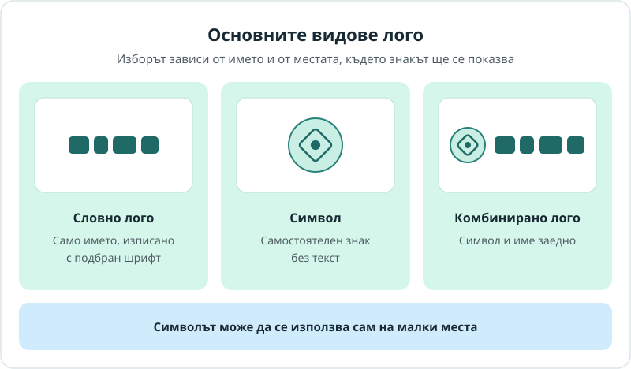
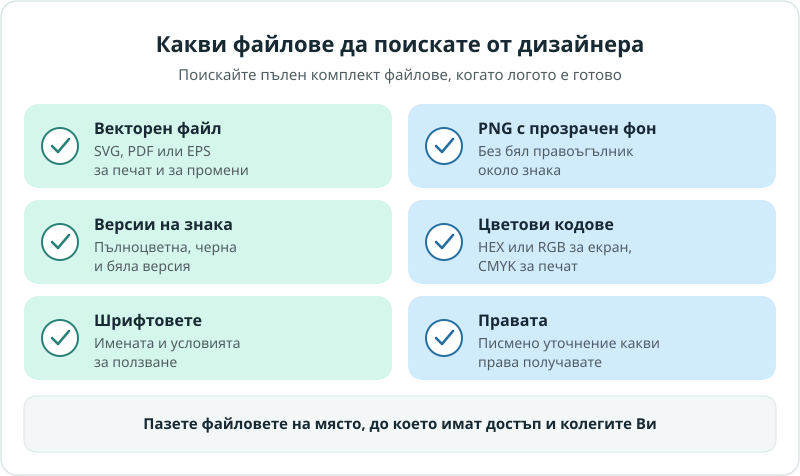

Съвети
Какво е лого и какво прави едно лого добро
Логото е графичният знак, по който клиентите разпознават Вашия бизнес: името, изписано по определен начин, символ или двете заедно. Доброто лого се чете лесно в малък и в голям размер, остава ясно в един цвят и подхожда на дейността Ви. То се използва на много места, от профилната снимка в социалните мрежи до табелата на входа, затова е добре да е подготвено за всички тях още в началото.
Обновено
Какво е логото на един бизнес?
Логото е знакът, с който бизнесът се подписва навсякъде, където клиентите го срещат. То може да съдържа само името, само символ или комбинация от двете, изпълнени в определени цветове и шрифт.
Основната му задача е разпознаването. Когато клиент види същия знак на сайта, във Facebook, върху фактурата и на табелата, той свързва всички тези места с един и същ бизнес. Затова е по-важно знакът да е ясен и да се използва последователно, отколкото да е сложен.
Не е нужно знакът да описва всичко, което правите. Услугите се обясняват в текстовете на сайта и в публикациите, а от логото се очаква да е различимо и да подхожда на дейността.
Каква е разликата между знака, марката и слогана?
Трите понятия често се използват като синоними, но означават различни неща.
- Лого. Графичният знак: името, символът или двете заедно.
- Марка. Цялостната представа, която клиентите имат за бизнеса: как изглежда, как говори и как се отнася към тях. Логото е само видимата ѝ част.
- Слоган. Кратко изречение, което придружава името и казва нещо за бизнеса. Може да стои до логото, но обикновено не е част от самия знак.
Ново лого само по себе си не променя представата за бизнеса. Тя се изгражда от всичко, което клиентите виждат и преживяват, а знакът им помага да свържат тези впечатления с Вас.
Какви са основните видове?
Малките бизнеси най-често използват един от три основни вида. Изборът зависи от името, от местата, където знакът ще се показва, и от това, доколко клиентите вече познават бизнеса.

- Словно лого. Само името на бизнеса, изписано с подбран или специално нарисуван шрифт. Подходящо е, когато името е кратко и лесно за четене.
- Символ. Самостоятелен знак без текст, например абстрактна форма или опростено изображение. Без името символът се разпознава едва след като клиентите са го виждали много пъти заедно с него.
- Комбинирано лого. Символ и име заедно. Този вид дава най-голяма гъвкавост, защото символът може да се използва сам на малки места, а пълната версия да стои на сайта и на табелата.
Когато името е дълго, някои бизнеси използват инициалите си вместо пълното име.
Кои качества са важни за малкия бизнес?
Доброто лого за малък бизнес е преди всичко практично. Проверете предложенията на дизайнера по следните качества:
- Просто. Малко на брой форми и ограничен брой шрифтове. Детайлите, които изглеждат добре на голям екран, често изчезват в малък размер.
- Четимо в малък и голям размер. Знакът трябва да се разпознава и като малка иконка в профила, и върху табела или автомобил.
- Работи в един цвят. Логото трябва да остава ясно в черно и в бяло, например при печат с една боя, гравиране или върху тъмен фон.
- Подхожда на бизнеса. Формите, цветовете и шрифтът трябва да отговарят на дейността и на клиентите Ви.
- Различава се от конкурентите. Знак, който прилича на логото на друг бизнес в същия бранш, обърква клиентите.
Лесна проверка е да покажете знака на няколко души за кратко и след това да ги помолите да го опишат. Ако запомнят основната форма и името, знакът е достатъчно ясен.
Къде ще се използва знакът?
Преди да одобрите логото, направете списък с местата, където то ще се показва. Така по-лесно ще прецените дали е нужна и опростена версия.
- Сайтът и малката иконка в раздела на браузъра (favicon).
- Профилните снимки във Facebook, Instagram и в Google бизнес профила, които често се показват в кръг.
- Публикациите и рекламните визии в социалните мрежи.
- Офертите, фактурите, имейл подписът и другите документи.
- Табелата, витрината, автомобилите и работното облекло.
- Визитките, опаковките, менютата и етикетите.
Мястото определя и формата. В кръглата профилна снимка хоризонтално лого с дълго име се смалява толкова, че става трудно за четене, затова там често се използва само символът.
Какви файлове да поискате от дизайнера?
Когато логото е готово, поискайте пълен комплект файлове. Без тях за всяка нова табела, визитка или реклама може да се наложи отново да търсите дизайнера.

- Векторен файл. Векторният формат, например SVG, PDF или EPS, запазва качеството при всякакъв размер, от визитка до билборд. Той е нужен за печат и за бъдещи промени.
- PNG с прозрачен фон. Изображение без бял правоъгълник около знака, за сайта, публикациите и презентациите. Поискайте го във висока резолюция.
- Версии на знака. Пълноцветна, черна и бяла версия, хоризонтален и вертикален вариант и само символа, ако има такъв.
- Цветови кодове. Точните кодове на цветовете: HEX или RGB за екран, CMYK за печат и номерът по Pantone (система от стандартни цветове за печат), ако дизайнерът е използвал такъв.
- Шрифтовете. Имената на използваните шрифтове и условията, при които можете да ги ползвате в други материали.
- Правата. Писмено уточнение какви права върху логото получавате.
Пазете файловете на място, до което имат достъп и колегите Ви, например в общата папка на фирмата.
Кои грешки се срещат най-често?
Повечето проблеми с логото излизат наяве едва когато знакът трябва да се смали, отпечата или постави върху снимка.
- Твърде много детайли, тънки линии и преливащи цветове, които се губят в малък размер.
- Само цветна версия, без вариант в един цвят.
- Копиране на модерни ефекти или на чужд знак вместо собствено решение.
- Име, изписано с труден за четене ръкописен или декоративен шрифт.
- Само един JPG файл с бял фон и никакъв векторен файл.
- Различни версии на логото на различни места, например стар знак на табелата и нов в профилите.
Тези грешки обикновено се избягват, ако изпробвате знака на реалните места още преди окончателното одобрение.
Откъде да продължите с визиите и сайта?
Готовото лого трябва да се използва последователно във всички материали. Xtra AI подготвя всеки месец брандирани визии, публикации и рекламни материали, които следват стила на Вашата марка, и изработва сайтове за малкия бизнес.
Първата стъпка е безплатната диагностика, в която избирате вида на бизнеса си и отбелязвате проблемите, които познавате. След нея провеждаме 30-минутен разговор и подготвяме оферта с приоритизирани решения и ясни еднократни цени. Срокът зависи от решението и го посочваме в офертата.
Диагностиката не Ви обвързва с нищо и работим без дългосрочни договори.
Често задавани въпроси
Какво е лого с прости думи?
Логото е графичният знак на бизнеса: името му, изписано по определен начин, символ или двете заедно. По него клиентите разпознават бизнеса на сайта, в социалните мрежи, върху документите и на табелата.
Как да разбера дали едно лого е добро?
Погледнете го смалено до размера на профилна снимка и в един цвят. Ако се чете лесно, подхожда на дейността Ви и не прилича на знака на конкурент, то е достатъчно ясно за ежедневна употреба.
Какъв файл с логото ми трябва за печат?
За печат е нужен векторен файл, например PDF, SVG или EPS, както и CMYK стойностите на цветовете. Векторният файл запазва качеството при всякакъв размер.
Защо логото ми изглежда размазано в профилната снимка?
Обикновено причината е, че знакът има твърде много детайли или че се използва малко изображение с ниска резолюция. Опростена версия, например само символът, и PNG файл във висока резолюция обикновено помагат.
Подготвя ли Xtra AI визии с моето лого?
Xtra AI подготвя всеки месец брандирани визии, публикации и рекламни материали, които следват стила на Вашата марка. Подробностите се уточняват в офертата след безплатната диагностика.
Свързани услуги
- Социални мрежи и криейтивиПубликации по график след Вашето одобрение, брандирани криейтиви всеки месец и актуален Google профил.Научете повече
- Изработка на сайтИзграждаме сайтове за малки бизнеси и ги поддържаме след пускането, с кратък месечен отчет.Научете повече
- Безплатна диагностикаОтбележете ситуациите, които познавате от своя бизнес, и вижте ориентировъчно колко часа седмично отнемат.Научете повече
Първата стъпка е безплатна
Диагностиката не Ви обвързва с нищо. Показваме Ви точно какво можем да поправим и колко ще струва.